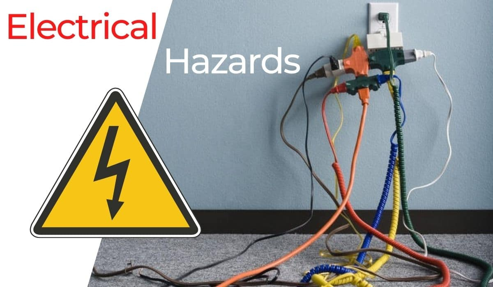

Published November 5, 2023 | by Jaspher Bagor
Electrical hazards encompass a range of potential dangers and risks that are linked to electrical systems. These hazards have the potential to cause severe injuries, including burns, electrocution, arc flash, electric shock, and other serious harm. In the most severe instances, they can even result in fires or explosions, posing a significant threat to both life and property. Consequently, it is crucial to prioritize electrical safety to ensure the overall well-being and security of a location and its occupants.
Working around electricity can be safe on the job site if workers properly identify and control hazards. However, inadequate training, lack of experience, and failure to recognize potential hazards can lead to electric shock or death.
The construction industry is particularly at risk, accounting for 52% of all electrical fatalities in the US workplace. Most of these incidents and fatalities occur due to direct worker contact with overhead power lines and contact with machines, tools, and metallic objects.
To protect against these dangers, awareness is key. Knowing the potential risks associated with electricity allows individuals to take precautions and prevent accidents and fatalities. This knowledge also enables prompt action when signs of electrical hazards are spotted, contributing to overall workplace safety.
Electrical hazards, while dangerous, can be prevented when you’re aware of the factors that contribute to them. Here's a list of the most common causes of electrical hazards to watch out for:
Electrocution is one of the most common hazards across construction sites according to OSHA. Identifying electrical hazards can help raise awareness of the risks, their severity, and how they can harm workers.
In this section, learn about common electrical hazards in the workplace and electrical safety tips to prevent them:
Overhead powered and energized electrical lines have high voltages which can cause major burns and electrocution to workers. Remember to maintain a minimum distance of 10 feet from overhead power lines and nearby equipment. Conduct site surveys to ensure that nothing is stored under overhead power lines.
In addition, safety barriers and signs must be installed to warn nearby non-electrical workers of the hazards present in the area.
Exposure to damaged electrical tools and equipment can be very dangerous. Do not fix anything unless you are qualified to do so. Thoroughly check for cracks, cuts, or abrasions on cables, wires, and cords. In case of any defects, have them repaired or replaced.
Aside from this, Lock Out Tag Out (LOTO) procedures should be performed at all times before commencing electrical maintenance and repairs. LOTO procedures are there to protect all workers on a worksite.
Using wires of inappropriate size for the current can cause overheating and electrical fires to occur. To prevent this, use the correct wire suitable for the operation and the electrical load to work on. Use the correct extension cord designed for heavy-duty use.
Make sure to not overload an outlet and use proper circuit breakers. Perform regular fire risk assessments to identify areas at risk of bad wiring and circuits.
Examples of exposed electrical parts include temporary lighting, open power distribution units, and detached insulation parts on electrical cords. These hazards can cause potential shocks and burns. Secure these items with proper guarding mechanisms and always check for any exposed parts to be repaired immediately.
The most common OSHA electrical violation is the improper grounding of equipment. Proper grounding can eliminate unwanted voltage and reduce the risk of electrocution. Never remove the metallic ground pin as it is responsible for returning unwanted voltage to the ground.
Defective or inadequate insulation is a hazard. Be aware of damaged insulation and report it immediately. Turn off all power sources before replacing damaged insulation and never attempt to cover them with electrical tape.
Never operate electrical equipment in wet locations. Water greatly increases the risk of electrocution especially if the equipment has damaged insulation. Have a qualified electrician inspect electrical equipment that has gotten wet before energizing it.
Electrical inspections are an essential preventive measure to avoid electrical hazards in the workplace. This procedure helps detect and address potential hazards, reducing the risk of electrical injuries and contributing to a safer working environment. Failure to conduct these inspections regularly can also lead to accidents caused by electric shock or even death.
So how do these inspections aid in preventing electrical hazards? Here’s a quick overview to help you get started: